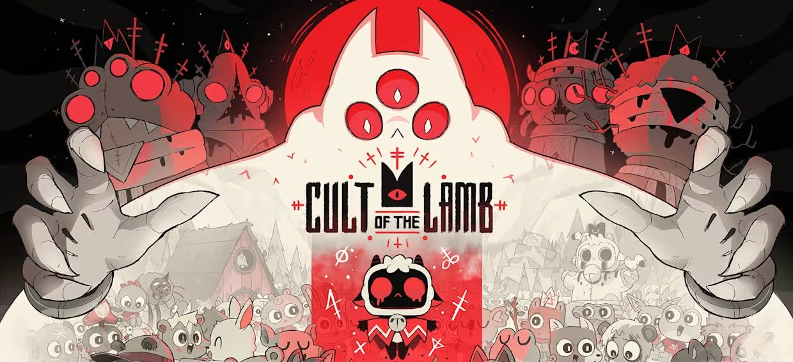
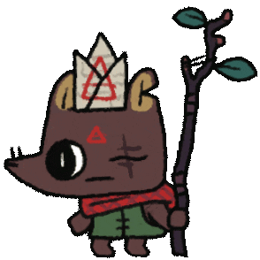

THE GOUT GAME
Cult of the Lamb é um jogo que mistura roguelike de ação + gerenciamento de uma seita, desenvolvido pelo estúdio Massive Monster e publicado pela Devolver Digital. Você joga como um cordeiro que foi salvo da morte por uma entidade misteriosa. Em troca, essa entidade exige que você crie e lidere um culto em seu nome.

Jogabilidade
A jogabilidade de Cult of the Lamb mistura principalmente ação, exploração, gerenciamento de vila e elementos de roguelite. O jogo alterna constantemente entre dois tipos de gameplay:
Combate e exploração
Você controla o Cordeiro e entra em regiões geradas de forma procedural para enfrentar inimigos.
Gerenciamento do culto
Quando volta para sua base, começa a segunda parte do jogo: administrar seu culto.
